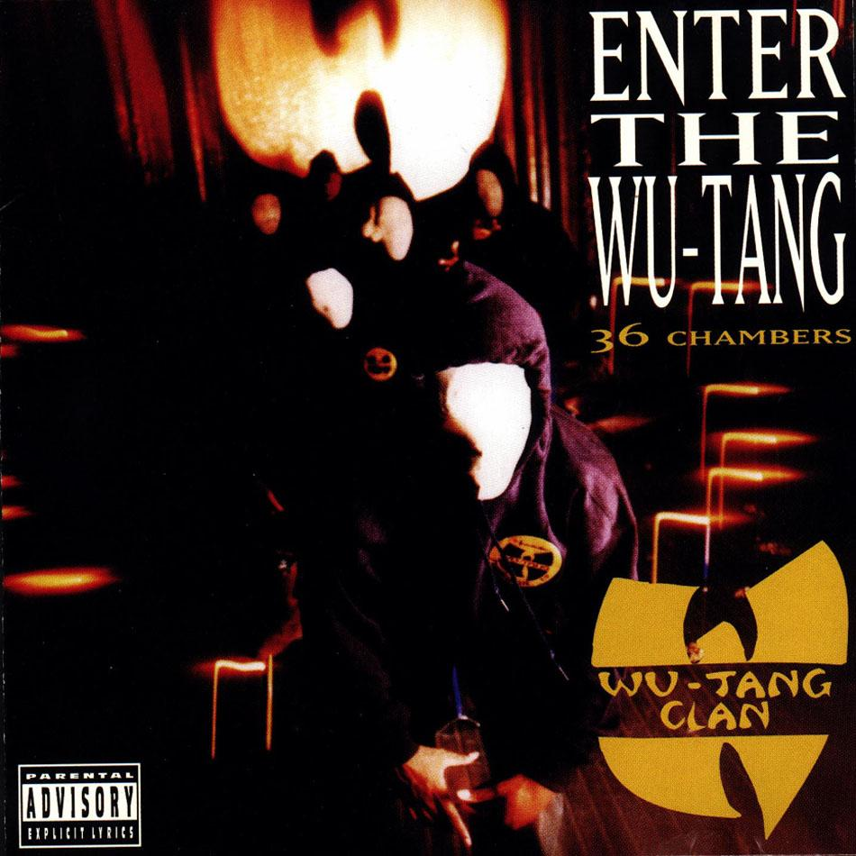
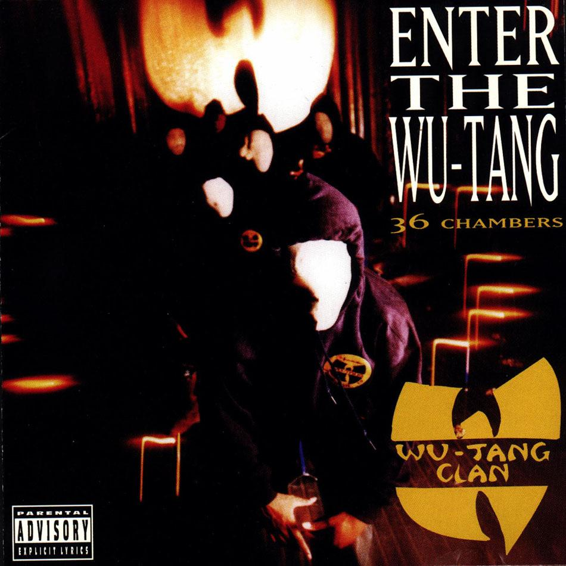

The hoodie has had a large influence on modern society and is a significant part of fashion history. This webpage is an interactive article showing the key events within the hoodies history. The history of the hoodie has been a very significant influence towards the design and crafting of CAPS Clothing’s newly released winter range of hoodies and jumpers.
Touch the image to flip the content.
For best viewing pleasure, view this website on a mobile device – best on IOS Devices. I hope you enjoy this interactive experience.
Caps Clothing.
The first hooded sweatshirt was created by Champion in the early 1920’s – it was designed for sports players to keep them warm while they were on the side-line waiting to be played by their coach during sports games. It also was used by labourers in harsh environments.
The accompanying imagery shows how the revolutionary hooded pull over was advertised during its early stages of adoption. The advertisement describes the hoodies warm, comfort and adjustable hood.
The rise of cultural groups within America, particularly New York, lead to the adaption of hoodies within these groups - including hip hop artists, gang related groups and graffiti artists.
Graffiti artists become fond to hoodie because it could hide their identity while they were doing illegal activities such as public spray painting – or bombing as it was referred to within that era. Because of the misconduct that took place while these cultural groups were wearing hoodies, hoodies were perceived as rebellious garments.
In the award winning sport drama film ‘Rocky’ directed by Sylvester Stallone, the main character Rocky trained in an iconic plain hooded sweatshirt. Rocky boxed his way towards professional boxing career overcoming unbelievable obstacles and experience through sheer willpower, desire strength and hard work.
Rocky’s plain hoodie recreated the appearance and impression of hoodies within mainstream culture – bringing its connection back to its original status of the working man if which was its initial representation when it was initially developed by Champion clothing.
In the early 90s skateboarding culture was at its peak. Skate parks weren’t publicly available so skaters had to be creative and adapt to whatever they deemed possible. Skateboarders sneaked around, trespassing and evading private properties in search of the perfect bowl.
Wearing hoodies was a way to mask their identities - this was the same benefits of which graffiti artists adopted hoodies for. Skaters outlawed attitude and rebellion was passed through the representation of the hoodie garment.
 

the Rise in hip hop and rap happened in the 1990’s, association of mysteriousness and scariness developed through the hoodie in previous decades - exemplified through music culture.
Donec felis tortor, imperdiet sed bibendum quis, vestibulum sed sem. Nunc fringilla fermentum vestibulum. Nullam nisl mi, sodales in mi eu, pellentesque egestas purus. Cras ex nulla, sagittis ac malesuada nec, iaculis vel massa. Donec condimentum dui nzon tortor egestas aliquam. Duis varius, purus ac euismod interdum.

Mark Zuckerberg creator of facebook choose to wear a hoodie to meet wall streetinvestors leading up to facebooks initial release which lead to a debute regarding the symbolization of the garnment.
Donec felis tortor, imperdiet sed bibendum quis, vestibulum sed sem. Nunc fringilla fermentum vestibulum. Nullam nisl mi, sodales in mi eu, pellentesque egestas purus. Cras ex nulla, sagittis ac malesuada nec, iaculis vel massa. Donec condimentum dui nzon tortor egestas aliquam. Duis varius, purus ac euismod interdum.